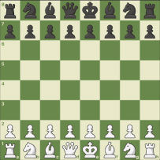
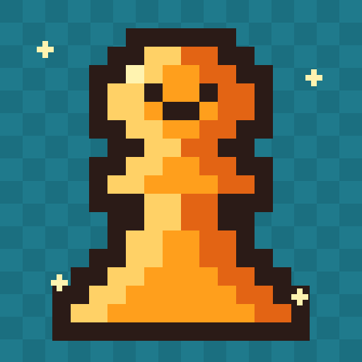

Estamos personalizando o seu perfil

0%
Xeque-Mate

Olá,
usuário
!
Perfil
Dashboard
Puzzles
Sair
Estatísticas
Veja seu desempenho nos puzzles:
Melhor peça
—
Puzzles feitos
0/10
Total de erros
0
Média de estrelas
—
Estrelas por peça:
Progresso por lição: